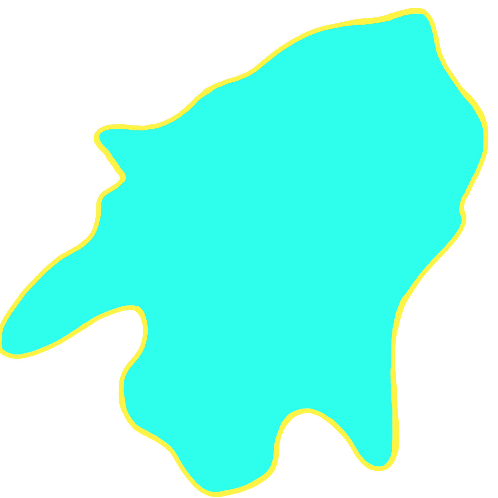

I am a second-year M.S. student in Computer Science at Cornell University. My research focuses on Natural Language Processing and Computational Social Science, particularly on studying and modeling conversational behaviors and social interactions. I am fortunate to be advised by Prof. Cristian Danescu-Niculescu-Mizil (CS Major) and Prof. Lillian Lee (INFO SCI Minor) for my current MS study.
> Master of Science in Computer Science @
Cornell University
> Undergraduate in Computer Science ∧ Mathematics @
Cornell University